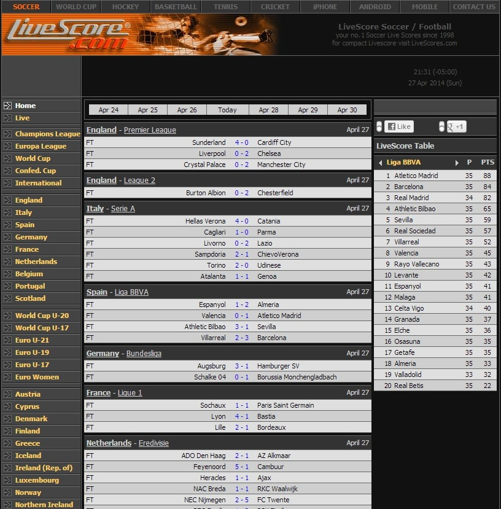

As the title says, live scores are updated directly from the source, in real-time.
My eyes are drawn directly to the scores of the most recent matches/games. The website is very simple, on a dark theme, which does not hurt my eyes at all. Yet I can always find what I am looking for easily.
There are many other livescore websites, however I still prefer livescore.com simply because it is simple, and has information I need. Other websites may be fancy, colorful, but why would I care about anything rather than the score itself?
Another good thing is the site has no ads whatsoever, that makes reading even easier.

YouTube:
I don't know how much time I have spent on Youtube. When I don't know what to do in front of my computer, my default address is this!
Visually the website is also pretty simple. White background, black text, with a screenshot for each video.
Seaching for a certain video clip is easy. But most of the time I don't really know what to watch, so here comes the suggestions. They are all based on what I recently watched the most, and I just keep clicking on one after another. I don't even need the keyboard! I feel like I could stay on this website forever.